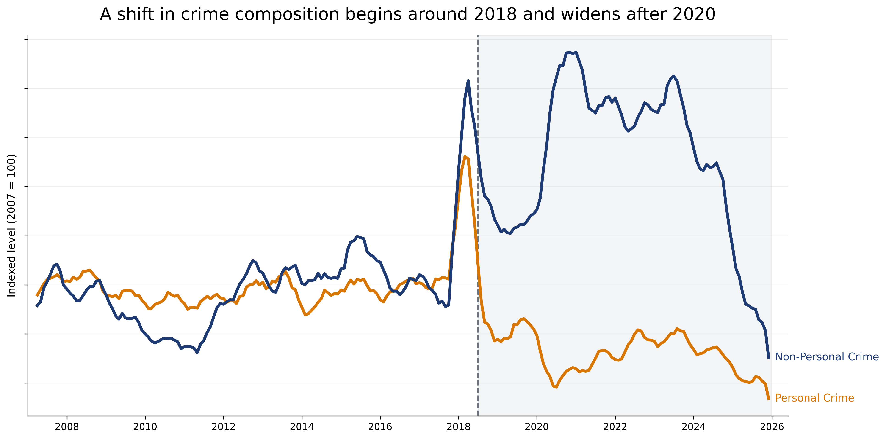

It is tempting to talk about crime as if it moves in one direction for the whole city. This dataset suggests something less simple. When I group incidents into personal crime and non-personal crime, a clear split starts to appear around 2018.
I define personal crime here as assault and robbery. I define non-personal crime as vehicle theft and burglary. This is not meant to be a perfect legal classification. It is a simple way to compare incidents that involve direct interpersonal harm with incidents that are more tied to property and opportunity.
A visible split starts around 2018
The first figure tracks both groups over time and indexes them to the same starting point. That makes it easier to compare change in pattern rather than raw volume. The key point is not that one line is always larger. The key point is that the two groups stop moving together.
Around 2018, both groups spike and then fall, but they do not settle in the same place. After that reset, non-personal crime remains structurally above its earlier level, while personal crime drops below its older range. The period after 2020 widens that gap even more.

This is why I think the most useful summary is not that crime simply rose or fell. A better summary is that the mix of reported incidents changed. The next question is whether that shift is evenly spread across San Francisco or concentrated in particular places.
The non-personal increase is not evenly spread across the city
The second figure maps how much non-personal crime changed across police districts. Instead of plotting all incidents directly, it compares the percent change in average annual vehicle theft and burglary between 2007–2017 and 2018–2025.
This makes the geographic story much easier to read. If the composition shift were uniform, the districts would look fairly similar. They do not. Some districts show much larger increases than others, which suggests that the citywide split in Figure 1 is being driven more strongly in certain places.
Tenderloin shows what the shift looks like on the ground
The final figure zooms in on Tenderloin, the district with the largest increase in non-personal crime in the map above. Instead of collapsing everything into one total, it follows the four categories used in the story across time: assault, robbery, burglary, and vehicle theft.
The buttons let the reader switch between all categories, only personal crime, and only non-personal crime. This makes it easier to see what kind of local change sits underneath the broader citywide composition shift. The point of the figure is not only that Tenderloin changed, but how it changed.
Taken together, the three figures suggest that San Francisco did not simply experience more or less crime after 2018. Instead, the composition of reported incidents changed, and that change was carried by specific categories and specific parts of the city.
References
- DataSF. Police Department Incident Reports: Historical 2003 to May 2018.
- DataSF. Police Department Incident Reports: 2018 to Present.
- Richardson, R., Schultz, J. M., Crawford, K. Dirty Data, Bad Predictions: How Civil Rights Violations Impact Police Data, Predictive Policing Systems, and Justice. This reading was useful as a reminder that police data is shaped by institutions, not just by crime itself.